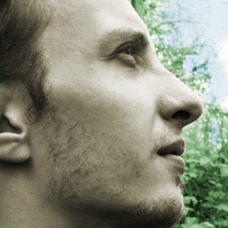
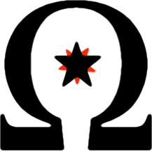
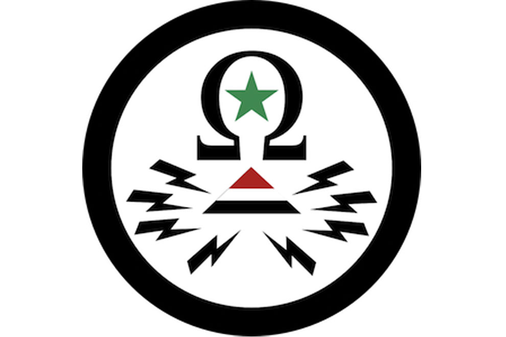

work
Ich arbeite seit 2007 meist nebenberuflich als Web-Entwickler mit den aktuellsten Web- Technologien. Seit 2009 programmiere ich auch auf der Basis von HTML5 und allem was dazu gehört. Dazu gehören beiläufige Programmierung auf Client und Serverseite, der Einsatz von JS ebenfalls auf dem Server, Websockets, Canvas, CSS3 sowie all die anderen Neuerungen, die HTML5 mit sich brachte.
Seit Juli 2013 agiere ich als Projektleiter für Softwareentwicklung / Software- Entwicklung.
Daneben biete ich freiberufliche Dienstleistungen aus der Informatik von der Büroausstattung mit Computern über Internet- und Telefoninstallation bis hin zum erstellen von Webseiten inklusive Webhosting an.
activism
Nachdem ich bereits in der Kindervereinigung und im Freifunk aktiv war, kam ich 2011 zu telecomix. Dort begann ich in der OpSyria aktiv zu werden, was wiederum zur Gründung der wnh führte.
In dieser Organisation bin ich je nach Möglichkeit im Einsatz und setze mich aktiv für das Recht der Menschen auf Informationsfreiheit sowie freie Meinungsäusserung, vor allem im Internet, ein.
contact
Anfragen bitte bevorzugt per E-Mail. Bei Bedarf auch verschlüsselt mit PGP, meinen Publickey findet man auf den meißten bekannten Keyservern.
mail@christian-neubauer.de neu3no@jabber.ccc.de +49 371 / 33710052 +49 371 / 33710059 Christian Neubauer zzsu7h2dhzo37nc7projects
Projekte an denen ich früher mitgewirkt habe oder es aktuell noch tue:
- Kindervereinigung Leipzig e.V. - JFZ Waldheim Aufbau und Wartung eines Medienraumes, um Jugendlichen einen Zugang zum Internet zu verschaffen.
- Freifunk Chemnitz
- Tierrechts-Aktionsgruppe Chemnitz
- Telecomix
- wnh.me
Kleine Studien und Tests mit Javascript:
- pixj Bildtransformation mit javascript und html5 canvas (github)
- bool-minimize eine implementation des Quine-McClusky Algorithmus in JS. Machbarkeits und Performance Test für mein Studium (github)
- "id3lib for nodejs" eine implementation eines id3tag parsers in nodejs, komplett in js geschrieben ohne äußere abhängigkeiten. Damit werden keine externen Tools benötigt (github).

piratenpartei
Die Piraten sind für mich mehr als nur eine Partei, die es sich auf die Fahne schrieb, das Internet frei von Zensur zu gestalten. Sie bietet die Möglichkeit eine Gesellschaft zu schaffen, in der man sich wirklich frei entwickeln kann.
Mein oberstes Ziel ist der Abbau von Privilegien aller Art. So dürfen die Herkunft, das Geschlecht, das Elternhaus, das Alter, die finanzielle Lage, körperliche Einschränkungen, Glaubenszugehörigkeit und all die vielen anderen Eigenschaften keine Auswirkungen auf den Bildungsweg, die Möglichkeit der freien Entfaltung und die Teilhabe am Leben haben.
Auch Behelfskonstrukte wie punktuelle Fördermaßnahmen bilden daher nur eine Übergangshilfe und dürfen auf keinen Fall als endgültige Lösung betrachtet werden.
Politik für den Menschen ist aus diesem Grund die einzig zukunftsfähige Politik.
chronic
- 2009 - Eintritt in die Piratenpartei
- 2009 - Gründung des Kreisverbandes Chemnitz
- 2009-2011 - Vorstandsmitglied der Piraten Chemnitz
- 2014 - Spitzenkandidat der Kommunalwahl, KWK6
Kontakt
presse / medien
- dradio: Kampf den Geheimdiensten
- dradiowissen: Hacken gegen den Diktator
- MDR1: "Freies Internet - Was ist das?" (20.01.2014, depubliziert)
- ARD: LEBEN! Die Hacker und die Syrer
- TU Chemnitz: Die Idee vom freien Internet
- ARTE: Yourope - 100 Jahre 1. Weltkrieg (Vergleich zu Syrien heute, helfen vom Computer aus; 11.01.2014, depubliziert)
- Morgenpost: Für Kommunalwahl: Piraten machen beute vorm Rathaus
{kind=link}
- Piratenpartei Pressemitteilung: Aufnahme syrischer Flüchtlinge in Deutschland ist dringend nötig
- Erster Piraten-Kreisverband in Sachsen gegründet (Chemnitz)
Alle Bilder und Logos, die auf dieser Website zu sehen sind, stehen unter CC-BY und dürfen verwendet werden. Ich würde mich dennoch über eine kurze Benachrichtigung freuen, sollten diese verwendet werden.
    
{kind=link}
{kind=link}
{kind=link}
{kind=link}
{kind=link}
{kind=link}